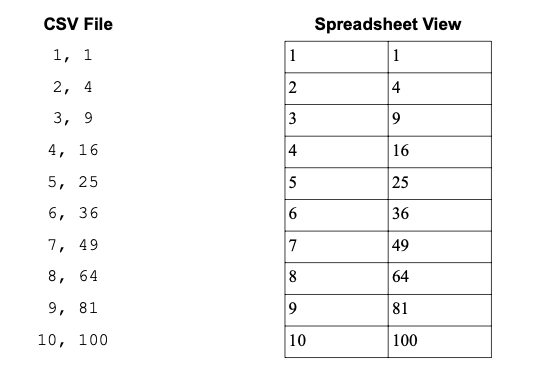

Chapter 1: Basic Python#
1.1 Numbers#
1.1.1 Basic Math#
To a degree, Python is an extremely powerful calculator that can perform both basic arithmetic and advanced mathematical calculations. Doing math in a Python interpreter is similar to using a graphing calculator – the user inputs a mathematical expression in a line and presses Return (or Shift-Return in the case of a Jupyter notebook cell), and the output appears directly below. Python includes a few basic mathematical operators shown in the table below.
Table 1 Python Mathematical Operators
Operator |
Description |
|---|---|
+ |
Addition |
- |
Subtraction |
* |
Multiplication |
/ |
Division (regular) |
// |
Integer division (aka. floor division) |
** |
Exponentiation |
% |
Modulus (aka. remainder) |
The addition, subtraction, multiplication, and division (regular) operators work the same way as they do in most math classes. In addition, Python follows the standard order of operation, so parentheses can be used to change the flow of the mathematical operations as needed.
8 + 3 * 2
14
(8 + 3) * 2
22
You may have noticed that there are spaces around the mathematical operators in the example calculations above. Python does not care about spaces within a line, so feel free to add spaces to make your calculation more readable as is done above. Python does, however, care about spaces at the beginning of a line. This will be further addressed in the sections on conditions and loops.
Regular division, denoted by a single forward slash (/), is exactly what you probably expect. Three divided by two is one and a half. Integer division, shown with a double forward slash (//), is a little more surprising. Instead of providing the exact answer, it can be viewed as either rounding down to the nearest integer (also known as flooring it) or simply truncating off anything after the decimal place.
3 / 2
1.5
3 // 2
1
Exponentiation is performed with a double asterisk (**). The carrot (^) means something else, so be careful not to accidentally use this.
2 ** 3
8
Occasionally, obtaining the modulus is also useful and is done using the modulo operator (%). This is also sometimes referred to as the remainder after division as it is whatever is leftover that does not divide evenly into the divisor. In the example below, 3 is seen as going into 10 thrice with 1 leftover. The leftover portion is the modulus. This is often useful in determining if a number is even among other things.
10 % 3
1
1.1.2 Integers & Floats#
There are two types of numbers in Python – floats and integers. Floats, short for “floating point numbers,” are values with decimals in them. They may be either whole or non-whole values such as 3.0 or 1.2, but there is always a decimal point. Integers are whole numbers with no decimal point such as 2 or 53.
Mathematical operations that include only integers and evaluate to a whole number will generate an integer. All other situations will generate a float. In the second example below, a float is generated because one of the inputs is a float. In the third example below, a float is generated despite only integers in the input because the operation evaluates to a fraction.
3 + 8
11
3.0 + 8
11.0
2 / 5
0.4
Integers and floats can be interconverted using the int() and float() functions.
int(3.0)
3
float(4)
4.0
The distinction between floats and integers is often a minor detail. There are times when a specific application or function will require a value as an integer or float. However, a majority of the time, you do not need to think much about it as Python manages most of this for you in the background.
1.1.3 Python Functions#
In addition to basic mathematical operators, Python contains a number of functions. As in mathematics, a function has a name (e.g., \(f\)) and the arguments are placed inside of the parentheses after the name. The argument is any value or piece of information fed into a function. In the case below, \(f\) requires a single argument x.
There are a number of useful math functions in Python with Table 2 describing a few common ones such as the absolute value, abs(), and round, round(), functions. Note that the round() function uses Banker’s rounding - if a number is halfway between two integers (e.g., 4.5), it will round toward the even integer (i.e., 4).
abs(-4)
4
round(4.5)
4
Table 2 Common Python Functions
Function |
Description |
|---|---|
|
Returns the absolute value |
|
Converts a value to a float |
|
Converts a value to an integer |
|
Returns the length of an object |
|
Converts an object to a list |
|
Returns the maximum value |
|
Returns the minimum value |
|
Opens a file |
|
Displays an output |
|
Rounds a value using banker’s rounding |
|
Converts an object to a string |
|
Returns the sum of values |
|
Converts an object to a tuple |
|
Returns the object type (e.g., float) |
|
Zips together two lists or tuples |
The print() function is one of the most commonly used functions that tells Python to display some text or values. While Jupyter notebooks will display the output or contents of a variable by default, the print() function allows for considerably more control as you will see below in section 1.3.
print(8.3145)
8.3145
In addition to Python’s native collection of functions, Python also contains a math module with more mathematical functions. Think of a module as an add-on or tool pack for Python. The math module comes with every installation of Python and is activated by importing it (i.e., loading it into memory) using the import math command. After the module has been imported, any function in the module is called using math.function() where function is the name of the function. For example, math contains the function sqrt() for taking the square root of values.
import math
math.sqrt(4)
2.0
Table 3 lists some commonly used functions in the math module, and a few examples are shown below. Interestingly, some functions simply provide a mathematical constant.
math.ceil(4.3)
5
math.pi
3.141592653589793
math.pow(2, 8)
256.0
Table 3 Common math Functions
Function |
Description |
|---|---|
|
Rounds \(x\) up to nearest integer |
|
Returns \(cos(x)\) |
|
Converts \(x\) from radians to degrees |
|
Returns the value \(e\) |
|
Returns \(e^x\) |
|
Takes the factorial (!) of \(x\) |
|
Rounds \(x\) down to the nearest integer |
|
Takes the natural log (ln) of \(x\) |
|
Takes the common log (base 10) of \(x\) |
|
Returns the value \(\pi\) |
|
Returns \(x^y\) |
|
Converts \(x\) from degrees to radians |
|
Returns \(sin(x)\) |
|
Returns the square root of \(x\) |
|
Returns \(tan(x)\) |
There are more ways to import functions or modules in Python. If you only want to use a single function from the entire module, you can selectively import it using the from statement. Below is an example of importing only the radians() function.
from math import radians
radians(4)
0.06981317007977318
One advantage of importing only a single function or variable is that you do not need to use the math. prefix. Some Python users take this method one step further by using a wild card (*), which imports everything from the module. That is, they type from math import *. This imports all functions and variables and again allows the user to use them without the math. prefix. The downside is that you might accidentally overwrite a variable (see following section 1.2 on variables) in your code this way. Unless you are absolutely certain you know all the functions and variables in a module and that it will not overwrite any variables in your code, do not use the * import. On second thought, just avoid using the * import anyway.
1.2 Variables#
When performing mathematical operations, it is often desirable to store values in variables for later use instead of manually typing them back in. This will save effort when writing your code and make any changes automatically propagate through your calculations.
1.2.1 Choosing & Assigning Variables#
Attaching a value to a variable is called assignment and is performed using a single equal sign (=). Below, 5.0 and 3 are assigned to the variables a and b, respectively. Mathematical operations can then be performed with the variables just as is done with numerical values.
a = 5.0
b = 3
a + b
8.0
Variables can be almost any string of characters as long as they start with a letter, do not contain an operator (see Table 1), and are not contained in Python’s list of reserved words shown in Table 4. It is also important to not use a variable twice as this will overwrite the first value. Modules and functions are also attached to variables, so if you have imported the math module, the module is attached to the variable math.
Table 4 Reserved Words in Python
|
|
|
|
|
|
|
|
|
|
|
|
|
|
|
|
|
|
|
|
|
|
|
|
|
|
|
|
|
|
|
|
|
It is also in your best interest to create variable names that clearly indicate what it contains if it is more than a generic example (like used in this book) or experiment. This will make writing and reading code significantly easier and is a good habit to start early. In the examples below, a reader might be able to determine that the first example is calculating energy using \(E = mc^2\) while it is more difficult to determine what the second example is calculating.
# clear variables
mass = 1.6
light_speed = 3.0e8
mass * light_speed**2
1.44e+17
# not-so-great variables
x = 3.2
a = 1.77
a + x
4.970000000000001
1.2.2 Compound Assignment#
A variable can be assigned to another variable as is shown below. When this happens, both variables are assigned to the same value, which is not particularly surprising.
x = 5
y = x
y
5
However, watch what happens if the first variable, x, is then assigned to a new value.
x = 8
y
5
Instead of y updating to the new value, it still contains the first value. This is because instead of y being assigned to x, the value 5 was assigned directly to y. Behind the scenes, Python handles assignment by making a pointer that connects a variable name to a value in the computer’s memory. Figure 1 illustrates what happens in the above example.

Figure 1 A representation of memory pointer during variable assignment is shown with the Python code (left) and the corresponding points (right).
The x pointer is directed to a new value but the y pointer is still aimed at 5.
1.3 Strings#
Floats and integers are means of storing numerical data. The other major type of data is text which is stored as a string of characters known simply as a string. Strings can contain a variety of characters including letters, numbers, and symbols and are identified by single or double quotes.
'some text'
'some text'
1.3.1 Creating a String#
The simplest way to create a string is to enclose the text in either single or double quotes, and a string can be assigned to variables just like floats and integers. To have Python print out the text, use the print() function.
text = "some text"
print(text)
some text
Strings can also be created by converting a float or integer into a string using the str() function.
str(4)
'4'
Even though a number can be contained in a string, Python will not perform mathematical operations with it because it sees anything in a string as a series of characters and nothing more. As can be seen below, in attempting to add '4' and '2', instead of doing mathematical addition, Python concatenates the two strings. Similarly, in attempting to multiply '4' by 2, Python returns the string twice and concatenates them. These are ways of combining or lengthening strings, but no actual math is performed.
'4' + '2'
'42'
'4' * 2
'44'
If two strings are multiplied, Python returns an error. This is an issue commonly encountered when importing numerical data from a text document. The remedy is to convert the string(s) into numbers using either the float() or int() functions.
int('4') * int('2')
8
If we want to know the length of a string, we can use the len() function as shown below.
len(text)
9
The length of 'some text' is 9 because a space is a valid character.
To display both text and numbers in the same message, the print() function is very helpful. The user can either convert the number to a string and concatenate the two or separate each object by a comma. Notice in the former method, spaces need to be included by the user.
print(str(4.0) + ' g')
4.0 g
print(4.0, 'g')
4.0 g
1.3.2 Indexing & Slicing#
Accessing a piece or slice of a string is a common task in scientific computing among other applications. This is often encountered when importing data into Python from text files and only wanting a section of it. Indexing allows the user to access a single character in a string. For example, if a string contains the amino acid sequence of a peptide and we want to know the first amino acid, we can use indexing to extract this character. The key detail about indexing in Python is that indices start from zero. That means the first character is index zero, the second character is index one, and so on. If we have a peptide sequence of ‘MSLFKIRMPE’, then the indices are as shown below.
Characters |
M |
S |
L |
F |
K |
I |
R |
M |
P |
E |
Index |
0 |
1 |
2 |
3 |
4 |
5 |
6 |
7 |
8 |
9 |
To access a character, place the index in square brackets after the name of the string.
seq = 'MSLFKIRMPE'
seq[0]
'M'
Interestingly, we do not have to use variables to do this; we could perform the same operation directly on the string.
'MSLFKIRMPE'[1]
'S'
What happens if you want to know the last character of a string? One method is to determine the length of a string and use that to determine the index of the last character.
len(seq)
10
seq[9]
'E'
The string can also be reverse indexed from the last character to the first using negatives starting with -1 the last character.
Characters |
M |
S |
L |
F |
K |
I |
R |
M |
P |
E |
Index |
-10 |
-9 |
-8 |
-7 |
-6 |
-5 |
-4 |
-3 |
-2 |
-1 |
seq[-1]
'E'
Indexing only provides a single character, but it is common to want a series of characters from a string. Slicing allows us to grab a section of the string. It uses the same index values as above except requires the start and stop indices separated by a colon in the square brackets. One important detail is that the character at the starting index is included in the slice while the character at the final index is excluded from the slice.
seq[0:5]
'MSLFK'
If you look at the index values for each letter, you will notice that the character at index 5 (I) is not included.
What happens if you want to grab the last three characters of a string to determine the file extension (i.e., what type of file it is)? The fact that the last index is not included in the slice causes a problem as is shown below.
file = '1rxt.pdb'
file[-3:-1]
'pd'
The way around this is to just leave the stop index blank. This tells Python to just go to the end.
file[-3:]
'pdb'
This trick also works for the start index to get the file name without the extension. Notice that the -4 index is the period.
file[:-4]
'1rxt'
Finally, we can also adjust the step size in the slice. That is, we can ask for every other character in a string by setting a step size of 2. The overall structure is [start : stop : step].
seq[::2]
'MLKRP'
1.3.3 String Methods#
A method is a function that works with a specific type of object. String methods only work on strings, and they do not work on other objects such as floats. Later on, you will see other objects like lists and NumPy arrays which have their own methods for performing common tasks with those types of objects. If it makes it any easier, feel free to equate the term “method” with “function” in your mind, but know that there is a bit more to methods.
One example of a string method is the capitalize() function which returns a string with the first letter capitalized. Using a string method is referred to as calling the method… it is computer science lingo for executing a function. The method is called by appending .capitalize() to the string or a variable representing the string. For example, below is an Albert Einstein quote that needs to have the first letter capitalized.
quote = 'anyone who has never made a mistake has never tried anything new.'
quote.capitalize()
'Anyone who has never made a mistake has never tried anything new.'
Notice that if we check the original quote, it is unchanged (below). This method does not change the original string but rather returns a copy with the first letter capitalized. If we want to save the capitalized version, we can assign it to a new variable or overwrite the original.
quote
'anyone who has never made a mistake has never tried anything new.'
cap_quote = quote.capitalize()
cap_quote
'Anyone who has never made a mistake has never tried anything new.'
As a minor note, string methods can also be called with str.method(string) with method being the name of the string method and string being the string or string variable. While this works, it is used less often. The first approach with string.method() is preferred because any string method needs a string to act upon, so many people find it logical that a string should start the function call. It is also shorter to type, which is certainly a virtue.
str.isalpha(quote)
False
str.capitalize(quote)
'Anyone who has never made a mistake has never tried anything new.'
Below are a few common string methods you may find useful.
Table 5 Common String Methods
Method |
Description |
|---|---|
|
Capitalizes the first letter in the string |
|
Returns the string centered with spaces on both sides to have a requested total width |
|
Returns the number of non-overlapping occurrences of a series of characters |
|
Returns the index of the first occurrence of |
|
Determines whether a string is all alphanumeric characters and returns |
|
Determines whether a string is all letters and returns |
|
Determines whether a string is all numbers and returns |
|
Returns a string with the leading |
|
Returns a string with the trailing |
|
Splits a string apart based on a separator; if |
|
Determines if the string starts with a |
|
Determines if the string ends with a |
1.3.4 String Formatting#
In section 1.3.1, we were able to concatenate two strings by using the + operator as shown below. With this approach, it is necessary to convert any non-string into a string using the str() function.
MW = 63.21
"Molar mass = " + str(MW) + " g/mol."
'Molar mass = 63.21 g/mol.'
While this approach usually works fine, it can get messy or unwieldy as you are combining more strings. In this section, we will cover a couple of other methods for merging strings. Which you choose to use is a matter of personal preference, but it is good to be aware of them as you may see them around.
str.format() Method#
The first method we will address is using the str.format() method. In this approach, the string (i.e., str) includes curly brackets {} where you want to insert additional strings, and these additional strings are provided as arguments in the str.format() function. As an example, below we are generating a sentence providing the name and molecular weight of a compound. Notice how compound is inserted in the sentence where the first {} is located while MW is inserted in the location of the second {}.
compound = 'ammonia'
MW = 17.03
'The molar mass of {} is {} g/mol.'.format(compound, MW)
'The molar mass of ammonia is 17.03 g/mol.'
If we assign the compound and MW variable to other values, the str.format() function dutifully inserts these new strings into our sentence. Also notice that the format() function automatically converts non-string objects into strings for us.
compound = 'urea'
MW = 60.06
'The molar mass of {} is {} g/mol.'.format(compound, MW)
'The molar mass of urea is 60.06 g/mol.'
A variation of the above approach is to include an index value inside the curly brackets indicating which string provided to the str.format() function is inserted where in the sentence. In the example below, compound is provided to the str.format() function first, so it replaces {0} while MW is second, so it replaces {1}. Remember that Python index values start with zero.
compound = 'urea'
MW = 60.06
'The molar mass of {0} is {1} g/mol.'.format(compound, MW)
'The molar mass of urea is 60.06 g/mol.'
Because we are explicitly providing index values, we can insert strings into the sentence in any order. Notice in the example below that the MW and compound variables are provided to the function in a different order.
'The molar mass of {1} is {0} g/mol.'.format(MW, compound)
'The molar mass of urea is 60.06 g/mol.'
We can also insert strings into our sentence multiple times as shown below.
'The compound {0} is a molecular compound \
and {0} has a molar mass of {1} g/mol.'.format(compound, MW)
'The compound urea is a molecular compound and urea has a molar mass of 60.06 g/mol.'
F-Strings#
The next approach to combining strings is using f-strings. In this approach, the string is preceded with f, and any inserted strings are denoted using {} with the variable name inside the curly brackets as demonstrated below. The appeal of this approach is that it is simple, versatile, and relatively easy to follow.
f'The molar mass of {compound} is {MW} g/mol.'
'The molar mass of urea is 60.06 g/mol.'
We can also modify the strings by placing additional Python code inside the brackets like below where the first letter of the compound is capitalized.
f'The molar mass of {compound.capitalize()} is {MW} g/mol.'
'The molar mass of Urea is 60.06 g/mol.'
1.4 Boolean Logic#
Python supports Boolean logic where all expressions are evaluated as either True or False. These are useful for adding conditions to scripts. For example, if you are writing code to determine if a sample is a neutral pH, you will want to test if the pH equals 7. If the pH == 7 evaluates as True, the sample is neutral, and if this statement is False, the sample is not neutral.
1.4.1 Boolean Basics#
There are a number of Boolean operators available in Python with the most common summarized in Table 6. These operators are essentially truth tests with Python returning either True or False. Many of them work as one would expect. For example, if 8 is tested for equality with 3, a False is returned. Note that the operator for equals is a double equal sign, whereas a single equal sign assigns a value to a variable.
8 == 3
False
Table 6 Basic Boolean Comparison Operators
Operator |
Description |
|---|---|
|
Equal (double equal sign) |
|
Not equal |
|
Less than or equal |
|
Greater than or equal |
|
Less than |
|
Greater than |
|
Identity |
|
Negative identity |
The is and is not Boolean operators are not as intuitive. These two operators test to see if two objects are the same thing (i.e., identity) or not the same thing, respectively. For example, if we test 8 and 8.0 for equality, the result is True because they are the same quantity. However, if we test for identity, the result is False because 8 is an integer and 8.0 is a float.
8 > 3
True
8 == 8.0
True
8 is 8.0
<>:1: SyntaxWarning: "is" with 'int' literal. Did you mean "=="?
<>:1: SyntaxWarning: "is" with 'int' literal. Did you mean "=="?
/var/folders/zy/7y6kpdbx6p1ffrp1vtxy3ttc0000gn/T/ipykernel_2927/1557232650.py:1: SyntaxWarning: "is" with 'int' literal. Did you mean "=="?
8 is 8.0
False
In the last example, Python generates a warning because the user probably meant to use == instead of is.
1.4.2 Compound Comparisons#
Comparisons can be concatenated together with Boolean logic operators to make compound comparisons. Common Boolean logic operators are shown in Table 7.
Table 7 Common Boolean Logic Operators
Operator |
Description |
|---|---|
|
Tests for both being |
|
Tests for either being |
|
Tests for |
The and operator requires both input values to be True in order to return True while the or operator requires only one input value to be True in order to evaluate as True. The not operator is different in that it only takes a single input value and returns True if and only if the input value is False. It is essentially a test for False.
True and False
False
True or False
True
8 > 3 or 8 < 2
True
not 8 > 3
False
Truth tables for the three common Boolean logic operators are shown below. Boolean logic by itself is not immensely useful, but when paired with conditions (introduced below), it is a powerful tool in programming and data analysis.
Table 8 Truth Table for the and/or Logic Operators
|
|
|
|
|---|---|---|---|
|
|
|
|
|
|
|
|
|
|
|
|
|
|
|
|
Table 9 Truth Table for the not Logic Operator
|
|
|---|---|
|
|
|
|
1.4.3 Alternative Truth Representations#
The values 1 and 0 can also be used in place of True and False, respectively, as Python recognizes them as surrogates. For Python to know that you mean these values as Booleans and not simply integers, Python sometimes requires the bool() function.
bool(1)
True
bool(0)
False
Python also accepts any non-zero value as True.
bool(5)
True
You can perform some of the above Boolean operations from section 1.4.2 with 1 and 0, but Python will return the result in terms of 1 and 0.
1 or 0
1
1 and 0
0
1.4.4 any() & all()#
It is sometimes helpful to test if any or all values test True in a list or tuple (covered in section 1.6). The any() and all() functions do exactly this. The former will return True if one or more of the values in the object test True while the latter will only evaluate as True only if all values are True.
any([True, True, False])
True
all([True, True, False])
False
all([True, True, True])
True
When fed numbers, both the any() and all() functions will treat them as Booleans as described in section 1.4.3.
any([0, 1, 0])
True
1.4.5 Test for Inclusion#
Python allows for the testing of inclusion using the in operator. Let us say we want to test if there is nickel in a provided molecular formula. We can simply test to see if “Ni” is in the formula.
comp1 = 'Co(NH3)6'
comp2 = 'Ni(H2O)6'
'Ni' in comp1
False
'Ni' in comp2
True
The in operator also works for other objects beyond strings including lists and tuples which you will learn about in section 1.6.
1.5 Conditions#
Conditions allow for the user to specify if and when certain lines or blocks of code are executed. Specifically, when a condition is true, the block of indented code directly below runs. In the example below, if pH is greater than 7, the code prints out the statements “The solution is basic” and “Neutralize with acid.”
if pH > 7:
print('The solution is basic.')
print('Neutralize with acid.')
1.5.1 if Statements#
The if statement is a powerful way to control when a block of code is run. It is structured as shown below with the if statement ending in a colon and the block of code below indented by four spaces. In the Jupyter notebook, hitting the Tab key will also generate four spaces.
x = 7
if x > 5:
y = x **2
print(y)
49
If the Boolean statement is True at the top of the if statement, the code indented below will be run. If the statement is False, Python skips the indented code as shown below.
x = 3
if x > 5:
y = x **2
print(y)
Nothing is printed or returned in this code because x is not greater than 5.
1.5.2 else Statements#
There are times when there is an alternative block of code that you will want to be run when the if statement evaluates as False. This is accomplished using the else statement as shown below.
pH = 9
if pH == 7:
print('The solution is neutral.')
else:
print('The solution is not neutral.')
The solution is not neutral.
If pH does not equal 7, then anything indented below the else statement is executed.
There is an additional statement called the elif statement, short for “else if,” which is used to add extra conditions below the first if statement. The block of code below an elif statement only runs if the if statement is False and the elif statement is True. In the example below, if pH is equal to 7, the first indented block is run. Otherwise, if pH is greater than 7, the second block is executed. In the event that the if and all elif statements are False, then the else block is executed.
if pH == 7:
print('The solution is neutral.')
elif pH > 7:
print('The solution is basic.')
else:
print('The solution is acidic.')
The solution is basic.
It is worth noting that else statements are not required with every if statement, and the last condition above could have been elif pH < 7: and have accomplished the same result.
1.6 List & Tuples#
Up to this point, we have only been dealing with single values or strings. It is common to work with a collection of values such as the average atomic masses of the chemical elements, but it is inconvenient to assign each value to its own variable. Instead, the values can be placed in a list or tuple. Lists and tuples are both collections of elements, such as numbers or strings, with the key difference that a list can be modified while a tuple cannot. A tuple is said to be immutable as it cannot be changed once created. Not surprisingly, lists are often more useful than tuples.
1.6.1 Creating Lists#
A list is created by placing elements inside square brackets. Below, the list called mass is created containing the atomic mass of the first six chemical elements.
mass = [1.01, 4.00, 6.94, 0.01, 10.81, 12.01]
mass
[1.01, 4.0, 6.94, 0.01, 10.81, 12.01]
A single list can contain a variety of different types of objects. Below a list called EN is created to store the Pauling electronegativity values for the first six elements on the periodic table. The list contains mostly floats, but being that the value for He is unavailable in this example, an 'NA' string resides where a value would otherwise be.
EN = [2.1, 'NA', 1.0, 1.5, 2.0, 2.5]
EN
[2.1, 'NA', 1.0, 1.5, 2.0, 2.5]
1.6.2 Indexing & Slicing List#
Indexing is used to access individual elements in a list, and this method is similar to indexing strings as demonstrated below. The index is the position in the list of a given object, and again, the index numbering starts with zero. Accessing an element of a list is done by placing the numerical index of the element we want in square brackets behind the list name. For example, if we want the first element in the electronegativity list (EN), we use EN[0], while EN[1] provides the second element and so on.
EN[0]
2.1
EN[1]
'NA'
Multiple elements can be retrieved at once by including the start and stop indices separated by a colon. Like in strings, this process is known as slicing. A convention that occurs throughout Python is that the first index is included but the second is not, [included : excluded : step].
EN[0:3]
[2.1, 'NA', 1.0]
EN[3:5]
[1.5, 2.0]
Just like in strings, if we want everything to the end, provide no stop index.
EN[3:]
[1.5, 2.0, 2.5]
1.6.3 List Methods#
Similar to strings, list objects also have a collection of methods (i.e., functions) for performing common tasks. Some of the more common and useful list methods are presented in Table 10, and all of these methods modify the original list except copy(). As is the case with methods, they only work on the object type they are designed for, so list methods only work on lists.
Table 10 Common List Methods
Method |
Description |
|---|---|
|
Adds a single element to the end of the list |
|
Removes all elements from the list |
|
Creates an independent copy of the list |
|
Returns the number of times an element occurs in the list |
|
Adds multiple elements to the list |
|
Returns the index of the first occurrence of font |
|
Inserts the given element at the provided index |
|
Removes and returns the element from a given index; if no index is provided, it defaults to the last element |
|
Removes the first occurrence of element in the list |
|
Reverses the order of the entire list |
|
Sorts the list in place |
Below is a list containing the masses, in g/mol, of the first seven elements on the periodic table. They are clearly not in order, so they can be sorted using the sort() method. Unlike the sorted() function (Table 2), the sort() method modifies the original list.
mass = [4.00, 1.01, 6.94, 14.01, 10.81, 12.01, 9.01]
mass.sort()
mass
[1.01, 4.0, 6.94, 9.01, 10.81, 12.01, 14.01]
The list can be reversed using the reverse() method.
mass.reverse()
mass
[14.01, 12.01, 10.81, 9.01, 6.94, 4.0, 1.01]
Probably one of the most useful methods in Table 10 is the append() method. This is used for adding a single element to a list. The extend() method is related but is used to add multiple elements to the list.
mass.append(16.00)
mass
[14.01, 12.01, 10.81, 9.01, 6.94, 4.0, 1.01, 16.0]
mass.extend([19.00, 20.18])
mass
[14.01, 12.01, 10.81, 9.01, 6.94, 4.0, 1.01, 16.0, 19.0, 20.18]
If multiple elements are added using the append() method, it will result in a nested list… that is, a list inside the list as demonstrated below.
mass.append([23.00, 24.31])
mass
[14.01, 12.01, 10.81, 9.01, 6.94, 4.0, 1.01, 16.0, 19.0, 20.18, [23.0, 24.31]]
There are times when this might be what we want, but probably not here.
Tip
The append() method is frequently used as a means of storing values in a list as they are generated like the following calculation of the wavelengths in the Balmer series. The for loop is explained in section 1.7.1.
wavelengths = []
for n in range(3,6):
wl = 1 / (1.097E-2 * (0.25 - 1/n**2))
wavelengths.append(wl)
1.6.4 range Objects#
It is common to need a sequential series of values in a specific range. The user can manually type these values into a list, but computer programming is about making the computer do the hard work for you. Python includes a function called range() that will generate a series of values in the desired range. The range() function requires at least one argument to tell it how high the range should be. For example, range(10) generates values up to and excluding 10.
a = range(10)
print(a)
range(0, 10)
The output of a is probably not what you expected. You were likely expecting a list from 0 \(\rightarrow\) 9, which is what used to happen back in the Python 2 days. Now, Python generates a range object that stands in the place of a list because it requires less memory. If you want an actual list from it, just convert it using the list() function.
list(a)
[0, 1, 2, 3, 4, 5, 6, 7, 8, 9]
The range() function also takes additional arguments to further customize the range and spacing of values. A start and stop position may be provided to the range() function as shown below. Consistent with indexing, the range includes the start value and excludes the stop value.
list(range(3, 12))
[3, 4, 5, 6, 7, 8, 9, 10, 11]
Finally, a step size can also be included. The default step size is one, but it can be increased to any integer value including negative numbers.
list(range(3, 20, 3))
[3, 6, 9, 12, 15, 18]
list(range(10, 3, -1))
[10, 9, 8, 7, 6, 5, 4]
While range objects may seem intimidating, they can be used in place of a list. Just pretend the range object is really a list. For example, you can index it like a list as shown below.
ten_nums = range(10)
ten_nums[2]
2
1.6.5 Tuples#
Tuples are another object type similar to lists except that they are immutable - that is to say, they cannot be changed once created. They look similar to a list except that they use parentheses instead of square brackets. So what use is an unchangeable list-like object? There are times when you might want data inside your code, but you do not want to accidentally change it. Think of it as something similar to locking a file on your computer to avoid accidentally making modifications. While this feature is not strictly necessary, it may be a prudent practice in some situations in case you make a mistake.
Below is a tuple containing the energy in joules of the first five hydrogen atomic orbitals. There is no need to change this data in your code, so fixing it in a tuple makes sense. Indexing and slicing work exactly the same in tuples as they do in strings and lists, so we can use this tuple to quickly calculate the energy difference between any pair of atomic orbitals.
nrg = (-2.18e-18, -5.45e-19, -2.42e-19, -1.36e-19, -8.72e-20)
nrg[1] - nrg[0]
1.635e-18
nrg[4] - nrg[3]
4.879999999999998e-20
That last output is worth commenting on. You may have noticed that the value returned by Python is not exactly what you probably expected based on the precision of the values in the nrg tuple. This is because Python does not store values to infinite precision, so this is merely a rounding error.
1.7 Loops#
Loops allow programs to rerun the same block of code multiple times. This is important because there are often sections of code that need to be run numerous times, sometimes extending into the thousands. If we needed to include a separate copy of the same code for every time it is run, our scripts would be unreasonably large.
1.7.1 for Loops#
The for loop is probably the most common loop you will encounter. It is often used to iterate over a multi-element object like lists or tuples, and for each element, the block of indented code below is executed. For example:
for value in [4, 6, 2]:
print(2 * value)
8
12
4
During the for loop, each element in the list is assigned to the variable value and then the code below is run. Essentially, what is happening is shown below.
value = 4
print(2 * value)
value = 6
print(2 * value)
value = 2
print(2 * value)
This allows us to perform mathematical operations on each element of a list or tuple. If we instead try multiplying the list by two, we get a list of twice the length.
2 * [4, 6, 2]
[4, 6, 2, 4, 6, 2]
The for loop does not, however, modify the original list. If we want a list containing the squares of the values in a previous list, we should first create an empty list and append the square values to the list.
numbers = [1, 2, 3, 4, 5, 6] # original values
squares = [] # an empty list
for value in numbers:
squares.append(value**2)
squares
[1, 4, 9, 16, 25, 36]
We can also iterate over range objects and strings using for loops. Remember that range objects do not actually generate a list, but we can often treat them as if they do. As an example, we can generate the wavelengths (\(\lambda\)) in the Balmer series by the following equation where \(R_{\infty}\) is the Rydberg constant (1.097 \(\times\) 10\(^{-2}\) nm\(^{-1}\)) and \(n_i\) is the initial principal quantum number.
The code below generates the first five wavelengths (nm) in the Balmer series.
for n in range(3,8):
lam = 1 / (1.097e-2 * (0.25 - (1 / n**2)))
print(lam)
656.3354603463993
486.1744150714068
434.084299170899
410.2096627164995
397.04243897498225
A for loop can also iterate over a string.
for letter in 'Linus':
print(letter.capitalize())
L
I
N
U
S
Another common use of for loops is to repeat a task a given number of times. It essentially acts as a counter. Imagine we want to determine how much of a 183.2 g \(^{235}\)U sample would be left after six half-lives. We can divide the quantity six times and print the result of each division. To accomplish this, we will have a for loop iterate over an object with a length of six, executing the division and printing each mass. The easiest way to generate an iterable object of length six is using the range() function.
U235 = 183.2
for x in range(6):
U235 = U235 / 2
print(str(U235) + ' g')
91.6 g
45.8 g
22.9 g
11.45 g
5.725 g
2.8625 g
In the above example, the value x from the range object is not used in the for loop. There is no rule that says it has to be. Also, you may notice that the variable names in all the above examples keep changing. Just like in the rest of your code, you are also welcome to pick your variables in the for loop. Some people like to use x as a generic variable, but it is often best to give the for loop variable an intuitive name so that it is easy to follow as your code grows more complex.
1.7.2 while Loops#
The other common loop is the while loop. It is used to keep executing the indented block of code below until a stop condition is satisfied. As an example, the indented block of code below the while statement is run until x is no longer less than ten. The x < 10 is known as the termination condition, and it is checked each time before the indented code is executed.
x = 0
while x < 10:
print(x)
x = x + 2 # increments by 2
0
2
4
6
8
Essentially, what is going on is shown in the following example, and this continues until x is no longer greater than 10.
if x < 10:
print(x)
x = x + 2
if x < 10:
print(x)
x = x + 2
The while loop is not as common as the for loop and should be used with caution. This is because it is not difficult to have what is known as a faulty termination condition resulting in the code executing indefinitely… or until you manually stop Python or Python crashes because it ran out of memory. This happens because the termination condition is never met resulting in a runaway process.
Warning
Do not run the following code! It may result in Python crashing.
x = 0
while x != 10:
x = x + 3
print('Done')
In the above code, the value is incremented until it reaches 10 (remember, != means “does not equal”), and then a “Done” message is printed - at least that is the intention. No message is ever printed and the while loop keeps running. If we do the math on the values for x, we find that in incrementing by three (0, 3, 6, 9, 12,…), the value for x never equals 10, so the while loop never stops. For this reason, it is wise to avoid while loops unless you absolutely must use them. If you do use a while loop, triple check your termination condition and avoid using = or != in your termination condition. Instead, try to use <= or >=. These are less likely to fail.
1.7.3 Continue, Pass, & Break Commands#
Other ways to control the flow of code execution are the continue, pass, and break commands. These are not used heavily, but it is helpful to know about them on the occasions that you need them. Table 11 summarizes each of these statements below.
Table 11 Loop Interruptions
Statement |
Description |
|---|---|
|
Breaks out of immediate containing |
|
Starts the next iteration of the immediate containing |
|
No action; code continues on |
The break statement breaks out of the most immediate containing loop. This is useful if you want to apply a condition to completely stop the for or while loop early. For example, we can simulate the titration of 0.9 M NaOH with 1 mL increments of 1.0 M HCl. In the code below, the initial volumes of NaOH and HCl are 25 mL and 0 mL, respectively. The for loop successively checks to see if there are more or equal moles of HCl as NaOH (i.e., the equivalence point). If not, the volume of HCl is incremented by one milliliter.
vol_OH = 35
vol_H = 0
for ml in range(1, 50):
vol_total = vol_OH + vol_H
mol_OH = 0.9 * vol_OH / 1000
mol_H = 1.0 * vol_H / 1000
if mol_H >= mol_OH:
break
else:
vol_H = vol_H + 1
print(f'Endpoint: {vol_H} mL HCl solution')
Endpoint: 32 mL HCl solution
If we solve this titration using the C\(_1\)V\(_1\) = C\(_2\)V\(_2\) equation where C is concentration and V is volume, we expect an endpoint of 31.5 mL of HCl, so a simulated endpoint of 32 mL makes sense. The above simulation can also be written as a while loop. A break statement can often be avoided through other methods, but it is good to be able to use one for instances where you really need it.
The continue statement is similar to the break except that instead of completely stopping a loop, it stops only the current iteration of the loop and immediately starts the next cycle. The script below takes the square root of even numbers only. The even number check is performed with number % 2 == 1. If this is True, the number is odd, and the continue statement causes the for loop to continue on to the next number.
numbers = [1, 2, 3, 4, 5, 6, 7]
for number in numbers:
if number % 2 == 1:
continue
print(math.sqrt(number))
1.4142135623730951
2.0
2.449489742783178
Finally, the pass statement does nothing. Seriously. It is merely a placeholder for code that you have not yet written by telling the Python interpreter to continue on. No completed code should contain a pass statement. The reason for using one is to be able to run and test code without errors occurring due to missing parts. If the following code is executed, an error will occur because there is nothing below the else statement.
pH = 5
if pH > 7:
print('Basic')
else:
Cell In[127], line 4
else:
^
SyntaxError: incomplete input
However, if we add a pass statement, no error occurs allowing us to see if the code works, aside from the missing part.
pH = 5
if pH > 7:
print('Basic')
else:
pass
1.8 File Input/Output (I/O)#
Up to this point, we have only been dealing with computer-generated and manually typed values, strings, lists, and tuples. In research and laboratory environments, we often need to work with data stored in a file. These files may be generated from an instrument or as the result of humans typing values into a spreadsheet as they take measurements or make observations. There are two general categories of data files: text and binary files. Text files are those that, when opened by a text editor, can be read by humans, while binary files cannot. The reading of binary files requires other specialized software, such as demonstrated in chapter 12, and text files are very common for storing data, so we will focus only on text files here.
There are a large variety of text files which differ simply by the way in which the information is formatted in the file. Common examples include comma separated values (CSV), protein database (PDB), and xyz coordinates (XYZ). These files have different extensions (i.e., those 3-4 letters after the period at the end of a file name), but they are all just text files. You can change the extension to .txt if you like and open them in any text editor or word processor. The .csv, .pdb, and .xyz are simply tags to help your computer decide which software application can and should open the file.
We will focus on the CSV file format as it is extremely common, and many software applications can export data in the CSV format. Comma separated value files are a way of encoding information that might otherwise be stored in a spreadsheet, and spreadsheet applications are able to easily read and write CSV files. Each line of the text file is a different row, and each item in a row is separated by commas… hence the name. Below are the contents of a CSV file and how it would look in a spreadsheet. In some files, you may see a \n at the end of each line. This is a line terminator character telling some software applications where a line ends.

1.8.1.Reading Lines with Python#
The first method we will cover for reading text files is the native Python method of reading the lines of the text file one at a time. This method requires a little more effort than the other methods in this book, but it also offers much more control.
There are three general steps for this approach: open the file, read each line one at a time, and close the file. Opening the file is performed with the open() function. Be sure to attach the file to a variable to be accessed later. Next, the data is read a single line at a time using the readlines() method. Being that we need to do the same task over and over, we will use a for loop. Finally, it is a good practice to close the file using the close() command. This process is demonstrated below in opening the data shown above in a file called squares.csv.
Note
One major difference between running the software installed on your own computer and Google Colab is that if you want Colab to be able to interact with data or images files on your Google Drive, you need to include the three extra lines of code shown below at the top of your notebook. The first two lines grant the notebook access to read/write files on your Google Drive while the third line (%cd /content/drive/My Drive/project) points your notebook to where your files are located. The path should reflect the location of the folder containing your notebook and data files. For example, if your notebook is contained in a folder titled project on Google Drive, the path will be /content/drive/My Drive/project.
from google.colab import drive
drive.mount('/content/drive')
%cd /content/drive/My Drive/project
file = open('data/squares.csv')
for line in file.readlines():
print(line)
file.close()
1,1
2,4
3,9
4,16
5,25
6,36
7,49
8,64
9,81
10,100
It worked! The above code reads each line and prints the contents. Of course, this is not particularly useful in this form. It would be much more useful in lists. We can fix this by creating a couple of empty lists and appending the values to the lists as the file is read.
file = open('data/squares.csv')
numbers = []
squares = []
for line in file.readlines():
fields = line.split(',') # splits line at comma
numbers.append(int(fields[0]))
squares.append(int(fields[1]))
file.close()
Now the values are in two separate lists. The first values are in the numbers list and the squares of the numbers are in the squares list.
numbers
[1, 2, 3, 4, 5, 6, 7, 8, 9, 10]
squares
[1, 4, 9, 16, 25, 36, 49, 64, 81, 100]
While the above methods work fine, it is considered best practice to read a file inside a context so that even if an error occurs, the file will still be closed properly. This is done as shown below using a with statement. There is no need to explicitly close the file because it is done automatically.
with open('data/squares.csv') as file:
for line in file.readlines():
print(line)
1,1
2,4
3,9
4,16
5,25
6,36
7,49
8,64
9,81
10,100
1.8.2 Writing Data with Python#
Python can also write data to a file using the write() function which takes a string and writes it to a file. Before this can be done, the file needs to be opened using the open() function which requires the name of the file to write to, and if the file does not already exist, it creates a new file with this name. There is an optional second argument for the open() function that sets the mode in which the file is opened. There are a number of modes, but common modes include 'w' for write-only mode, 'r' for read-only mode, and 'a' for append mode. The latter adds any new text to the end of an already-existing file.
In the example below, a list, angular, containing nested lists of angular quantum numbers and shapes is written to a new file. Following each nested list (i.e., angular quantum number and shape pair) is a line terminator character \n. Because the following code opens the file in a context using a with statement, there is no need to explicitly close the file as this is done automatically.
angular = [['l', 'shape'], [0, 's'], [1, 'p'],
[2, 'd'], [3, 'f']]
with open('new_file.csv', 'w') as file:
for row in angular:
file.write('{0}, {1} \n'.format(row[0], row[1]))
1.8.3 Reading Data with np.genfromtxt()#
The second approach to reading data from files uses a function from the NumPy library called genfromtxt(). NumPy will not be covered in depth until chapter 4, but we can still use a couple of functions before then. Before using NumPy, we need to import it using import numpy as np, which can be thought of as activating the library. The np.genfromtxt() function takes two required arguments for reading a text file: the file name and the delimiter.
np.genfromtxt('file_name', delimiter='')
The delimiter is the symbol that separates values in each row and can be almost any symbol including spaces or tabs. If you encounter tab-separated data, use delimiter='\t', and for comma separated values (CSV) files, use delimiter=','.
import numpy as np
file = np.genfromtxt('data/squares.csv', delimiter=',')
file
array([[ 1., 1.],
[ 2., 4.],
[ 3., 9.],
[ 4., 16.],
[ 5., 25.],
[ 6., 36.],
[ 7., 49.],
[ 8., 64.],
[ 9., 81.],
[ 10., 100.]])
The output of this function is something called a NumPy array. It is similar to a list except more powerful. You will learn to use these in chapter 4, but for now, just treat it as a list. If we want to know the square of 4, we can access that value using indexing. In the example below, the first index identifies the nested list inside the main list, and the second index indicates the second value inside that list.
file[4][1]
np.float64(25.0)
Another feature of the np.genfromtxt() function is the skip_header= optional argument. It instructs the function to disregard data until after a certain number of rows in the file. This is helpful because files often include non-data headers providing details like the instrument, date, time, and other details about the data. A data file may look like this.
July 7, 2017
number, square
1, 1
2, 4
3, 9
4, 16
5, 25
6, 36
7, 49
8, 64
9, 81
10, 100
In this case, we need the function to skip the first two rows as follows.
file = np.genfromtxt('data/header_file.csv', delimiter=',', skip_header=2)
file
array([[ 1., 1.],
[ 2., 4.],
[ 3., 9.],
[ 4., 16.],
[ 5., 25.],
[ 6., 36.],
[ 7., 49.],
[ 8., 64.],
[ 9., 81.],
[ 10., 100.]])
1.8.4 Writing Data with np.savetxt()#
One of the easiest approaches to writing data back to a file is to again use a NumPy function, np.savetxt(), which requires both a file name as a string and the data. It is also recommended to include a delimiter as a string using the delimiter= keyword argument. This function can write a file from a list, tuple, or NumPy array (introduced in section 4.1), and if a list or tuple is nested, each inner list/tuple is a row in the written file.
np.savetxt('file_name', data, delimiter='')
As an example, below is a nested list of temperatures (\(^{\circ}\)C) and the density of water at each temperature (g/mL). These data are saved to a file water_density.csv with each value separated by a comma.
# temp(C), density(g/mL)
H2O_dens = [[10, 0.999], [20, 0.998], [30, 0.996],
[40, 0.992], [60, 0.983], [80, 0.972]]
np.savetxt('water_density.csv', H2O_dens, delimiter=',')
1.9 Creating Functions#
After you have been programming for a while, you will likely find yourself repeating the same tasks. For example, let us say your research has you repeatedly calculating the distance between two atoms based on their xyz coordinates. You certainly could rewrite or copy-and-paste the same code every time you need to find the distance between two atoms, but that sounds horrible. You can avoid this by creating your own function that calculates the distance. This way, every time you need to calculate the distance between a pair of atoms, you can call the function and the same section of code located in the function is executed. You only have to write the code once and then you can execute it as many times as you need whenever you need.
1.9.1 Basic Functions#
To create your own function, you first need a name for the function. The name should be descriptive of what it does and makes sense to you and anyone who would use it. If we want to create a function to measure the distance between two atoms, distance might be a good name for the function.
The first line of a function definition looks like the following: the def statement followed by the name of the function with whatever information, called arguments, that is fed into the function, and a colon at the end. In this function, we will feed it the xyz coordinates for both atoms as either a pair of lists or tuples. In the parentheses following the function name, place variable names you want to use to represent these coordinates. We will use coords1 and coords2 here.
def distance(coords1, coords2):
Everything inside a function is indented four spaces directly below the first line. The distance between two points in 3D space is described by the following equation.
It is now a matter of coding this into the function. Being that we will take the square root, we also need to import the math module.
import math
def distance(coords1, coords2):
# changes along the x, y, and z coordinates
dx = coords1[0] - coords2[0]
dy = coords1[1] - coords2[1]
dz = coords1[2] - coords2[2]
d = math.sqrt(dx**2 + dy**2 + dz**2)
print(f'The distance is: {d}')
If you run the above code, nothing seems to happen. This is because you defined the function but never actually used it. Calling our new function is done the same way as any other function in Python.
distance((1, 2, 3), (4, 5, 6))
The distance is: 5.196152422706632
It works! This function prints out a message stating the distance between the two xyz coordinates, and the better part is that we can use this over and over again without having to deal with the function code.
distance((5, 2, 3), (7, 5.3, 9))
The distance is: 7.133722730804723
1.9.2 return Statements#
The distance() function prints out a value for the distance, but what happens if we want to use this value for a subsequent calculation? Perhaps we want to calculation the average of the distances between multiple pairs of atoms. We certainly do not want to retype these values back into Python, so instead we can have the function return the value. You can think of functions as little machines where the arguments in the parentheses are the input and the return at the end of the function is what comes out of the machine. Below is a modified version of our distance() function with a return statement instead of printing the value. By running the following code, it overwrites the original function.
def distance(coords1, coords2):
# changes along the x, y, and z coordinates
dx = coords1[0] - coords2[0]
dy = coords1[1] - coords2[1]
dz = coords1[2] - coords2[2]
d = math.sqrt(dx**2 + dy**2 + dz**2)
return d
distance([5, 6, 7], [3, 2, 1])
7.483314773547883
Now the function returns a float. We can assign this to a variable or append it to a list for later use.
dist = distance([5, 6, 7], [3, 2, 1])
dist
7.483314773547883
Below is code for iterating over a list of xyz coordinate pairs and calculating the distances between each pair. The values are appended to a list called dist_list from which the average distance is calculated.
pairs = (((1, 2, 3),(2, 3, 4)),
((3, 7, 1), (9, 3, 0)),
((0, 0, 1), (5, 2, 7)))
dist_list = []
for pair in pairs:
dist = distance(pair[0], pair[1])
dist_list.append(dist)
avg = sum(dist_list) / len(dist_list)
avg
5.691472815049315
1.9.3 Local Variable Scope#
Another advantage of using functions is that they maintain variables in a local scope. That is, any variable created inside a function is not accessible outside the function. If you look back at our distance() function, the variable d is only used inside the function. If we try to see what is attached to d, we get the following error message.
d
---------------------------------------------------------------------------
NameError Traceback (most recent call last)
Cell In[149], line 1
----> 1 d
NameError: name 'd' is not defined
This is because the variable d can only be used or accessed inside the distance() function. This is often very convenient because we do not have to worry about overwriting a variable or using it twice. This means that if a collaborator sends you a function that he/she wrote, you do not need to be concerned if a variable in your code is the same as one in your collaborator’s function. The function is self-contained making everything a lot simpler.
The obvious downside to variables being in a local scope inside a function is that you cannot access them directly. If you really need to access a variable in a function, place it in the return statement at the end of the function so that the function outputs the contents. Alternatively, you can also assign the contents of a variable inside a function to a variable that was created outside the function. For example, a function can append values to a list created outside of the function, shown below, and the list can be viewed anywhere. This works because anything that is created outside of the function is visible everywhere and is said to have a global scope.
def roots(numbers):
for number in numbers:
value = math.sqrt(number)
square_roots.append(value)
square_roots = []
roots(range(10))
square_roots
[0.0,
1.0,
1.4142135623730951,
1.7320508075688772,
2.0,
2.23606797749979,
2.449489742783178,
2.6457513110645907,
2.8284271247461903,
3.0]
1.9.4 Arguments#
Functions take in data through arguments placed in the parentheses after the function name. Different functions take different numbers and types of arguments from as few as zero to potentially dozens of arguments. Function arguments are also sometimes optional. Some functions allow the user to add extra data or change the function’s behavior through arguments.
The first type of argument is a positional argument. This is an argument that is required to be in a specific position inside the parentheses. For example, the function below takes in the number of protons and neutrons, respectively, and outputs the isotope name. This function is only written for the first ten elements on the periodic table.
def isotope(protons, neutrons):
elements = ('H', 'He', 'Li', 'Be', 'B', 'C', 'N', 'O', 'F', 'Ne')
symbol = elements[protons - 1]
mass = str(protons + neutrons)
print(f'{mass}{symbol}')
If we want to know the isotope contains six protons and seven neutrons, we input the values as isotope(6, 7) and get 13C as expected. However, if we switch the arguments to isotope(7,6), we get 13N, which is not correct. Positional arguments are extremely common, but the user needs to know what information goes where when calling a function.
isotope(6, 7)
13C
isotope(7, 6)
13N
The other common type of argument is the keyword argument. These arguments are attached to a variable inside the parentheses. The advantage of a keyword argument is that the user does not need to be concerned about argument order as long as the arguments have the proper labels. Below is the same isotope() function redefined using keyword arguments.
def isotope(protons=1, neutrons=0):
elements = ('H', 'He', 'Li', 'Be', 'B', 'C', 'N', 'O', 'F', 'Ne')
symbol = elements[protons - 1]
mass = str(protons + neutrons)
print(f'{mass}{symbol}')
isotope(protons=1, neutrons=2)
3H
Now if we switch the order, we still get the same result.
isotope(neutrons=2, protons=1)
3H
Another advantage of a keyword argument is that a default value can be easily coded in the function. Look up at the most recent version of the isotope() function and you will notice that protons was assigned to 1 and neutrons was assigned to 0 in the function definition. These are the default values. If we call the function without inputting either or both of these values, the function will assume those values.
isotope()
1H
isotope(neutrons=2)
3H
Functions can also take an indeterminate number of positional or keyword arguments, but this is less common and is covered in section 2.7 as an optional topic for those who are interested.
1.9.5 Docstrings#
The final component of a function is the docstring. Strictly speaking, this is not necessary for a function to work and is sometimes left out for simple functions, but it is a good habit to include them. This is especially true if you are creating the function for a much larger project or passing it to other people. A docstring is a string placed at the top of a function definition describing what the function does, what types of data it takes, and what is returned at the end of the function. Traditionally, docstrings are enclosed in triple quotes. The first line of the docstring describes what type of data goes in the function and what comes out. In the distance() function above, our function takes in a pair of lists or tuples and outputs a single value, so the first line may look something like this.
def distance(coords1, coords2):
'''(list/tuple, list/tuple) -> float
'''
The subsequent lines in the docstring can include other information such as more complete descriptions of what the function does and even short examples.
def distance(coords1, coords2):
'''(list/tuple, list/tuple) -> float
Takes in the xyz coordinates as lists or tuples for
two atoms and returns the distance between them.
distance((1,2,3), (4,5,6)) -> 5.196152422706632
'''
# changes along the x, y, and z coordinates
dx = coords1[0] - coords2[0]
dy = coords1[1] - coords2[1]
dz = coords1[2] - coords2[2]
d = math.sqrt(dx**2 + dy**2 + dz**2)
return d
Once a docstring is created, it can be accessed by typing the function name, complete with parentheses, and leaving the cursor in the parentheses. Then hit Shift + Tab to see the docstring. This trick works with any function in this book.
Further Reading#
There are a plethora of books and resources, free and otherwise, available on the Python programming language. Below are multiple examples. The most authoritative and up-to-date resource is the Python Software Foundation’s documentation page also listed below.
Python Documentation Page. https://www.python.org/doc/ (free resource)
Downey, Allen B. Think Python, Green Tea Press, 2012. https://greenteapress.com/wp/think-python-2e/ (free resource)
Reitz, K.; Schlusser, T. The Hitchhiker’s Guide to Python: Best Practices for Development, O’Reilly: Sebastopol, CA, 2016.
Das, U; Lawson, A.; Mayfield, C.; Norouzi, N.; Rajasekhar, Y.; Kanemaru, R. Introduction to Python Programming, Open Stax: Houston, TX, 2024. https://openstax.org/details/books/introduction-python-programming. (free resource)
Exercises#
Complete the following exercises in a Jupyter notebook. Any data file(s) referred to in the problems can be found in the data folder in the same directory as this chapter’s Jupyter notebook. Alternatively, you can download a zip file of the data for this chapter from here by selecting the appropriate chapter file and then clicking the Download button.
A 1.6285 L (\(V\)) flask contains 1.220 moles (\(n\)) of ideal gas at 273.0 K (\(T\)). Calculate the pressure (\(P\)) for the above system by assigning all values to variables and performing the mathematical operations on the variables. Remember that \(PV = nRT\) describes the relationship between \(V\), \(n\), \(P\), and \(T\) where \(R\) is 0.08206 L·atm/mol·K.
Calculate the distance of point (23, 81) from the origin on an xy-plane first using the
math.hypot()function and then by the following distance equation.\[ \sqrt{(\Delta x)^2 + (\Delta y)^2)} \]Assign x = 12 and then increase the value by 32 without typing “x = 32”.
Solve the quadratic equation using the quadratic formula below for a = 1, b = 2, and c = 1.
\[ x = \frac{-b \pm \sqrt{b^2 - 4ac}}{2a} \]Create the following variable
elements = 'NaKBrClNOUP'and slice it to obtain the following strings.elements = 'NaKBrClNOUP'
a. NaK
b. UP
c. KBr
d. NKrlOP
A single bond is comprised of a sigma bond while a double bond includes a sigma plus a pi bond. The following strings contain the bond energies (kJ/mol) for a typical C-C single bond and C=C double bond. Perform a mathematical operation on CC_single and CC_double to estimate how much energy a pi bond contributes to a C=C double bond.
CC_single = "345" CC_double = "611"
Removing file extensions
a) Write a Python script that takes the name of a PNG image (i.e., name always ends in “.png”) and removes the “.png” file extension using a string method.
b) Write a Python script that removes the file extension from a file name using slicing. You may assume that the file extensions will always be three letters long with a period (e.g., .png, .pdf, .txt, etc…).
For
DNA = 'ATTCGCCGCTTA', use Boolean logic to show that the DNA sequence is a palindrome (same forwards and backwards). Hint: this will require a Boolean logic operator to evaluate asTrue.DNA = 'ATTCGCCGCTTA
The following are the atomic numbers of lithium, carbon, and sodium. Assign each to a variable and use Python Boolean logic operators to evaluate each of the following.
Li, C, Na = 3, 6, 11
a) Is Li greater than C?
b) Is Na less than or equal to C?
c) Is either Li or Na greater than C?
d) Are both C and Na greater than Li?
Write a Python script that can take in any of the following molecular formulas as a string and print out whether the compound is an acidic, basic, or neutral compound when dissolved in water. The script should not contain pre-sorted lists of compounds but rather determine the class of molecule based on the formula. Hint: first look for patterns in the acid and base formulas in the following collection.
HCl
NaOH
KCl
H2SO4
Ca(OH)2
KOH
HNO3
Na2SO4
KNO3
Mg(OH)2
HCO2H
NaBr
Write a Python script that takes in the number of electrons and protons and determines if a compound is cationic, anionic, or neutral.
Create a list of even numbers from 18 \(\rightarrow\) 88 including 88. Using list methods, perform the following transformations in order on the same list:
a) Reverse the list
b) Remove the last value (i.e., 18)
c) Append 16
In a Jupyter notebook:
a) Create a tuple of even numbers from 18 \(\rightarrow\) 320 including 320.
b) Can you reverse, remove, or append values to the tuple?
The following code generates a random list of integers from 0 \(\rightarrow\) 20 (section 2.4.3 will cover this in more detail). Run the code and test to see if 7 is in the list. Hint: section 1.4.5 may be helpful.
import random nums = [random.randint(0,20) for x in range(10)]
Write a sentence (string) attached to a variable.
a) Convert all letters to lowercase and split the sentence into individual words using the
split()string method. This will generate a list of words.b) Modify the list (i.e., the list itself changes) so that the words are in alphabetical order. Hint: use list and string methods.
Using a
forloop, iterate over a range object and append 2\(\times\) each value into a list called double.Write a Python script that prints out “PV = nRT” twenty times.
Write a script that generates the following output without typing it yourself. Be sure to include unit labels with the space.
1000 g500.0 g250.0 g125.0 g62.5 g31.25 gThe isotope \(^{137}Cs\) has a half-life about 30.2 years. Using a
whileloop, determine how many half-lives until a 500.0 g sample would have to decay until there is less that 10.00 grams left. To accomplish this, create a counter (counter = 0) and add 1 to it each cycle of awhileloop to keep count.What is a faulty termination condition and what is one safeguard against them?… aside from not using
whileloops.For the following two file I/O problems, first run the following code to generate a test file containing simulated kinetics data.
import math with open('test.csv', 'a') as file: file.write('time, [A] \n') for t in range(20): file.write('%s, %s \n' % (t, math.exp(-0.5*t)))
Using Python’s native
open()andreadlines()functions, open the test.txt file and print each line.Using
np.genfromtxt(), read the test.txt file and append the time values to one list and the concentration values to a second list. You will need to skip a line in the file.Write and test a function, complete with docstring, that solves the Ideal Gas Law for pressure when provided with volume, temperature, and moles of gas (R = 0.08206 L·atm/mol·K) with the following stipulations.
a) Create one version of the function that takes only positional arguments.
b) Create a second copy of the function that takes only keyword arguments. Try testing this function with positional arguments. Does it still work?
Complete a function started below that calculates the rate of a single-step chemical reaction nA → P using the differential rate law (Rate = k[A]\(^n\)).
def rate(A0, k=1.0, n=1): ''' (concentration(M), k = 1.0, n = 1) → rate (M/s) Takes in the concentration of A (M), the rate constant (k), and the order (n) and returns the rate (M/s) '''
DNA is composed of two strands of the nucleotides adenine (A), thymine (T), guanine (G), and cytosine (C). The two strands are lined up with adenine always opposite of thymine and guanine opposite cytosine. For example, if one strand is ATGGC, then the opposite strand is TACCG. Write a function that takes in a DNA strand as a string and prints the opposite DNA strand of nucleotides.